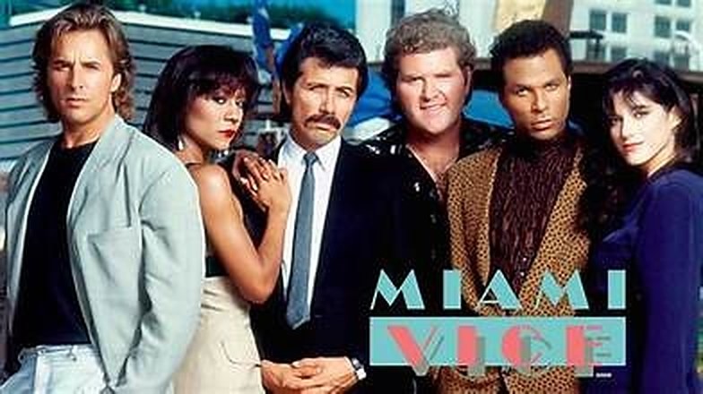
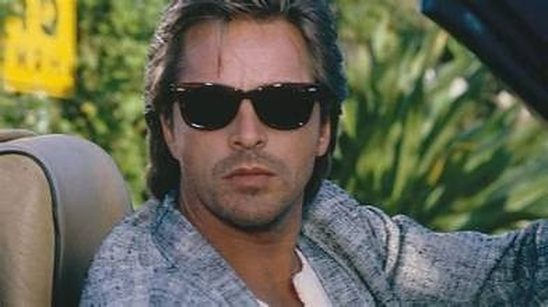

J'ai découvert Miami Vice sur M6, au début des années 90. J'étais jeune, mais certaines choses ne m'ont jamais quitté : le générique, la Ferrari Testarossa blanche, et surtout Crockett et Tubbs.
Je l'ai redécouverte plus tard, avec un regard d'adulte. Et elle n'a fait que grandir dans mon estime. Cette série a su imposer ses codes : l'image, la musique, le rythme, une façon de filmer la nuit et la ville que beaucoup ont copiée ensuite. Et Don Johnson est toujours aussi impressionnant.
Ce soir, on prend la route de Miami.

Miami Vice — l'équipe de la brigade
Miami Vice, en France Deux flics à Miami, est une série policière américaine diffusée sur NBC à partir du 16 septembre 1984, soit 5 saisons et 114 épisodes, le dernier étant diffusé en janvier 1990. Elle est créée par Anthony Yerkovich, et Michael Mann en est le producteur exécutif, ce qui explique en grande partie son style visuel.
Le principe tient en une phrase : deux flics de la brigade des mœurs de Miami, infiltrés dans le monde de la drogue et du crime. James « Sonny » Crockett (Don Johnson), ancien joueur de football devenu flic, et Ricardo Tubbs (Philip Michael Thomas), venu de New York pour venger la mort de son frère, forment le duo. Ils travaillent sous les ordres du lieutenant Martin Castillo (Edward James Olmos), et avec une équipe soudée : Gina Calabrese (Saundra Santiago), Trudy Joplin (Olivia Brown), Stan Switek (Michael Talbott) et Larry Zito (John Diehl).
Mais la série ne s'arrête pas à son intrigue. Elle impose une manière de filmer : des néons, des pastels, des costumes clairs, des Ferrari, des bateaux rapides, et une bande-son qui compte autant que l'image, avec des tubes de l'époque et la musique de Jan Hammer. Elle est devenue en quelques mois un symbole des années 80.
Une série qui ne ressemblait à aucune autre à la télévision.
Au début des années 80, la télévision américaine est dominée par des séries policières très classiques. Miami Vice arrive avec une autre idée. La légende veut que Brandon Tartikoff, alors patron de NBC, ait résumé le projet en deux mots sur un papier : « MTV cops ». Des flics, mais filmés comme des clips.
Le créateur, Anthony Yerkovich, s'inspire de la réalité des brigades anti-drogue de Floride. Michael Mann, déjà passionné par les ambiances nocturnes et urbaines, devient producteur exécutif et impose une ligne visuelle stricte : des couleurs pastel, des néons, une ville baignée de lumière, et peu de tons ternes. La série se tourne à Miami même, à une époque où le quartier d'Art déco de South Beach commence à retrouver son éclat.
Côté son, la musique n'est pas un simple fond : elle fait partie du récit. Des tubes de l'époque accompagnent les scènes, et le compositeur Jan Hammer signe un thème devenu mondial, qui atteindra la première place du classement américain des singles en 1985.
Côté look, Don Johnson lance sans le savoir une mode : veste claire sur un T-shirt, mocassins, barbe de trois jours. Et il y a les voitures. Crockett conduit d'abord une Ferrari noire, remplacée plus tard par la Testarossa blanche que tout le monde a en tête.
La série devient en peu de temps un phénomène, aux États-Unis puis à l'international, jusqu'à son arrêt en 1989.

La Testarossa blanche, sur un pont de Miami
Miami, 1984. La ville est belle, chaude, éclatante. Elle est aussi l'une des portes d'entrée de la drogue vers les États-Unis.
Sonny Crockett est flic à la brigade des mœurs, mais il vit sous couverture, au point de brouiller les limites entre son personnage et lui-même. Il vit sur un bateau, avec un alligator pour animal de compagnie. Ricardo Tubbs arrive de New York avec une idée fixe : retrouver ceux qui ont tué son frère. Leurs routes se croisent, et ils deviennent un duo.
Ensemble, ils s'infiltrent dans les milieux de la drogue, du blanchiment et des trafics d'armes, sous la direction du lieutenant Castillo, un homme discret et énigmatique. Chaque épisode est une nouvelle mission : un nouveau cartel, de nouveaux dealers, de nouveaux visages. Mais la série ne se contente pas d'enchaîner les affaires.
Au fil des saisons, les coups durs s'accumulent. Les deux hommes perdent des proches, doutent, se brûlent. Les missions leur coûtent de plus en plus, et la frontière entre le flic et le criminel qu'il fréquente devient floue.
Des flics en costume clair, une ville de néons, et un jeu dangereux où il faut sourire pour survivre.
Ce qui frappe en revoyant Miami Vice, c'est que la forme est un sujet à part entière. L'image, la lumière, la musique et le montage racontent autant que les dialogues. Michael Mann et son équipe traitent chaque épisode comme un petit film : des plans nocturnes, des reflets sur l'eau, des routes qui défilent, des silences portés par un morceau.
Le style a un effet précis : il donne à la ville un rôle. Miami n'est pas un décor, c'est un personnage, à la fois séduisant et dangereux. Les couleurs pastel et les néons rendent le crime presque glamour, et c'est justement ce contraste qui fait la force de la série : plus le décor est beau, plus ce qui s'y passe est sombre.
Le duo Crockett / Tubbs fonctionne sur deux tempéraments. Crockett, avec son air désabusé, porte la fatigue de la mission. Tubbs, plus direct, apporte l'énergie et la colère. Don Johnson, en particulier, a une présence naturelle à l'écran : il joue la lassitude sans en faire trop, ce qui rend le personnage crédible.
La série a aussi une vraie noirceur. Elle ne s'interdit pas les fins amères, les victoires qui coûtent cher et les personnages qui s'abîment. Le ton, très léger en surface, devient souvent grave en profondeur.
Elle a enfin changé les codes de la télévision. Après elle, la série policière peut avoir un style visuel et sonore assumé, ce que beaucoup de productions ont ensuite repris.
Sa limite, c'est son époque : certains scénarios sont inégaux, et la mode des années 80 a parfois mal vieilli. Mais c'est aussi ce qui fait son charme.

Lunettes noires, veste claire, décapotable : le look Crockett
Miami Vice n'a pas eu besoin d'être redécouverte pour compter : elle a marqué son époque dès sa diffusion. Mais son statut de classique tient à ce qu'elle a laissé derrière elle.
D'abord, son identité visuelle. Le générique, la Ferrari, les costumes clairs, les néons : même ceux qui n'ont jamais vu un épisode reconnaissent l'univers. Peu de séries ont imposé une image aussi forte.
Ensuite, sa musique. En associant des tubes de l'époque et le thème de Jan Hammer, elle a montré qu'une bande-son pouvait faire partie de l'écriture. Beaucoup de séries l'ont imité depuis.
Ensuite, ses invités. Au fil des saisons, la série a vu passer de futurs grands noms : Bruce Willis, Liam Neeson, Wesley Snipes, Laurence Fishburne, Viggo Mortensen, Stanley Tucci ou Ving Rhames. La liste est un petit voyage dans le cinéma à venir.
Enfin, son influence. Elle a ouvert la voie à une télévision plus ambitieuse, plus travaillée, plus proche du cinéma, et le film de Michael Mann sorti en 2006 a prolongé son univers.
Ce qui était une mode est devenu une référence.
Parce que la série a gagné en profondeur avec le temps. Ce qui passait pour un simple univers de néons et de Ferrari apparaît, avec un regard d'adulte, comme une vraie série sur l'usure : des flics qui s'abîment à force de vivre sous couverture, et des victoires qui laissent un goût amer.
Parce qu'elle se regarde aussi comme un voyage visuel. L'image, la lumière, les reflets de la ville et la musique donnent à chaque épisode une ambiance qu'on ne retrouve pas ailleurs. On peut la revoir pour l'atmosphère autant que pour l'histoire.
Parce que son casting réserve des surprises. Revoir Miami Vice, c'est croiser au détour d'un épisode des acteurs qui n'étaient pas encore des stars : Bruce Willis, Liam Neeson, Wesley Snipes, Laurence Fishburne, Viggo Mortensen, et bien d'autres.
Parce qu'elle a des épisodes qui valent à eux seuls le détour, des plus sombres aux plus spectaculaires, et c'est tout l'objet du guide qui suit.
Et parce que Don Johnson y est impressionnant : une présence, une fatigue élégante, un charisme qui ne vieillit pas.
Miami Vice, pour moi, c'est un générique entendu sur M6 quand j'étais jeune, une Ferrari Testarossa blanche, et deux flics, Crockett et Tubbs, qui ne ressemblaient à personne.
Des années plus tard, je l'ai revue avec un regard d'adulte, et elle n'a fait que grandir dans mon estime. Elle a su imposer ses codes : une image, une musique, une manière de filmer la nuit et la ville que beaucoup ont copiées sans jamais l'égaler. Et derrière le style, il y a une vraie série, sombre, mélancolique, qui ne ménage pas ses personnages.
Don Johnson, lui, est toujours aussi impressionnant.
Certaines séries marquent leur époque. Miami Vice, elle, a fixé l'image de toute une décennie.
La cassette est dans le lecteur. On rembobine.
Photos
La galerie
Six images de la série. Clique sur une vignette pour l'agrandir.
Guide
Les épisodes cultes
Saison par saison, une sélection d'épisodes à (re)voir. Titres originaux et dates de première diffusion aux États-Unis.
Saison 1
1984–1985 · 23 épisodesBrother's Keeper
16 sept. 1984 · piloteLe pilote : Crockett et Tubbs se rencontrent et le style de la série s'impose dès la première heure. Avec Jimmy Smits.
No Exit
9 nov. 1984Avec Bruce Willis, bien avant la célébrité.
Golden Triangle
11 et 18 janv. 1985 · 2 partiesUn double épisode plus ambitieux, avec Joan Chen et Keye Luke.
Smuggler's Blues
1er févr. 1985Le titre d'un tube de Glenn Frey, qui joue dans l'épisode : la musique au cœur de l'intrigue.
Evan
3 mai 1985Un ancien agent hors de contrôle oblige Crockett à affronter son passé. Avec William Russ.
Saison 2
1985–1986 · 23 épisodesThe Prodigal Son
27 sept. 1985 · 2 hL'épisode de lancement de la deuxième saison, en version double durée.
Out Where the Buses Don't Run
18 oct. 1985Le dernier dossier d'un flic de la brigade à la retraite, avec Bruce McGill. Il se termine sur « Brothers in Arms » de Dire Straits. TV Guide l'a classé parmi ses 100 plus grands épisodes.
Buddies
début de saison 2Un vieil ami de Crockett, ancien du Vietnam, doit choisir son camp. Avec James Remar, Frankie Valli et Nathan Lane.
Junk Love
8 nov. 1985Avec Miles Davis en guest.
Phil the Shill
13 déc. 1985Avec Phil Collins en guest.
Definitely Miami
10 janv. 1986Avec Arielle Dombasle et Ted Nugent.
Sons and Lovers
finale de la saison 2Le fils de Calderone cherche à se venger de Tubbs, dans un final noir où les héros sortent perdants. Avec un tout jeune John Leguizamo.
Saison 3
1986–1987 · 24 épisodesWhen Irish Eyes Are Crying
26 sept. 1986L'ouverture de la saison 3, avec Liam Neeson. C'est dans cet épisode que la Ferrari noire laisse la place à la Testarossa.
Walk-Alone
17 oct. 1986Avec Laurence Fishburne.
Streetwise
5 déc. 1986Avec Wesley Snipes et Bill Paxton.
The Good Collar
saison 3Crockett se lie avec un jeune athlète manipulé pour devenir informateur : l'un des épisodes les plus durs de la série. Avec Terry Kinney.
Down for the Count
saison 3 · 2 partiesUn double épisode très sombre, où l'équipe est durement touchée.
Red Tape
13 mars 1987Avec Viggo Mortensen et Lou Diamond Phillips.
Saison 4
1987–1988 · 22 épisodesContempt of Court
25 sept. 1987L'ouverture de la saison 4, avec Stanley Tucci.
Amen… Send Money
2 oct. 1987Un épisode au ton plus décalé, avec Brian Dennehy et Ben Stiller.
Child's Play
30 oct. 1987Avec Ving Rhames.
Mirror Image
6 mai 1988 · finale de la saisonLe final de la saison 4.
Saison 5
1988–1990 · 22 épisodesRedemption in Blood
11 nov. 1988Le troisième volet de l'arc qui ouvre la saison 5.
Over the Line
28 avr. 1989Un épisode de la dernière saison, diffusé quelques semaines avant le final.
Freefall
21 mai 1989 · 2 hLe finale de la série, en version double durée, avec Ian McShane.
Too Much, Too Late
25 janv. 1990 · USA NetworkL'un des épisodes les plus sombres de la série : NBC l'a écarté, et il n'a été diffusé que huit mois après le final, sur USA Network. Avec Pam Grier et C.C.H. Pounder.
Sélection personnelle, pas un classement officiel : 114 épisodes, 5 saisons, et beaucoup d'autres à découvrir.
Titre original
Miami Vice
Pays
États-Unis
Genre
Policier · Action
Diffusion
NBC · 1984–1989 (dernier épisode en 1990) · 5 saisons, 114 épisodes
Créateur
Anthony Yerkovich · Michael Mann (producteur exécutif)
Avec aussi
Edward James Olmos · Saundra Santiago · Olivia Brown
Musique
Jan Hammer
Note
Découverte sur M6, au début des années 90
SOMEDAY — SÉRIES EP. 07 · LE GÉNÉRIQUE